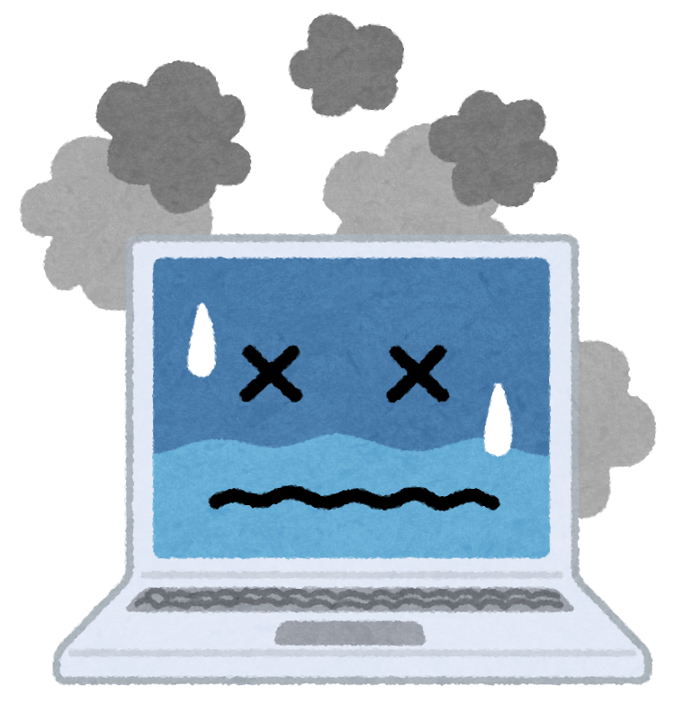

診断書
原因：ソフトウェア・ハードウェア
考えられる原因はいくつかあります。「立ち上がっているバックグラウンドアプリが必要以上に多い」「パソコンの故障」「パソコンのスペックが足りていない」などが考えられます。
予防・治療
必要以上にバックグラウンドアプリが起動していないかよく確認してみてください。
Windowsであれば「Windowsの設定＞プライバシー＞バックグラウンドアプリ」でタスクの確認、
Macであれば「Command + Optoin + Esc」キーを同時に押して確認してください。
不要なアプリが起動していたら、適宜終了をしましょう。
また、パソコンに不具合がないかも確認しましょう。特にハードディスクの容量が極端に少ないか、ファイルが破損していないかも確認しましょう。
自身で確認できない場合には修理に出すと良いです。
さらに、パソコン自体のスペックの不足も原因に考えられます。
ソフトウェアを利用する際に必要な環境があるため、使っているソフトに見合ったスペックのパソコンを使っているかどうか確認をしてみてください。
キーワード
バックグラウンドアプリ、パソコンのスペック
参考リンク
